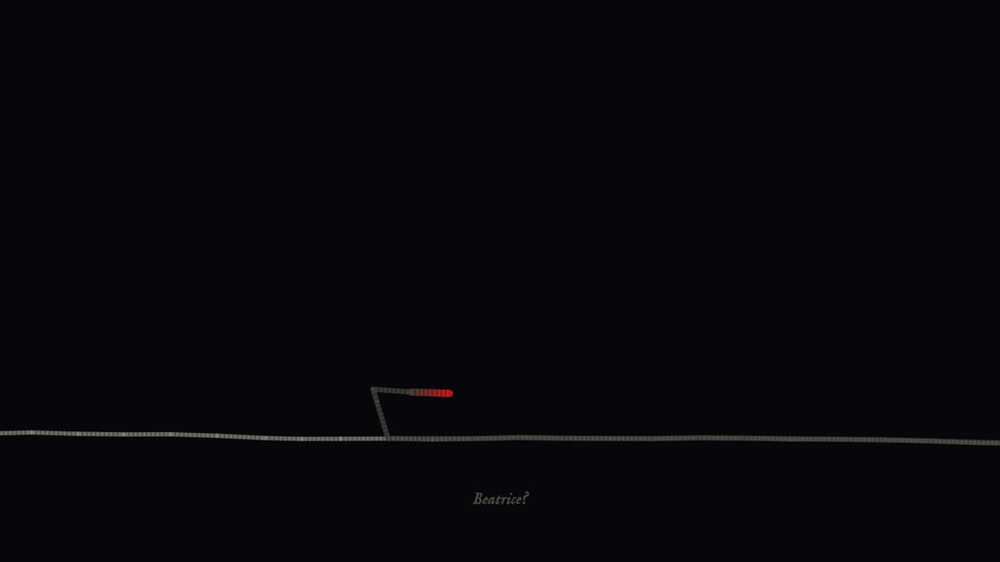
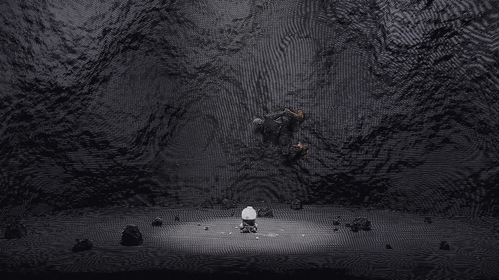
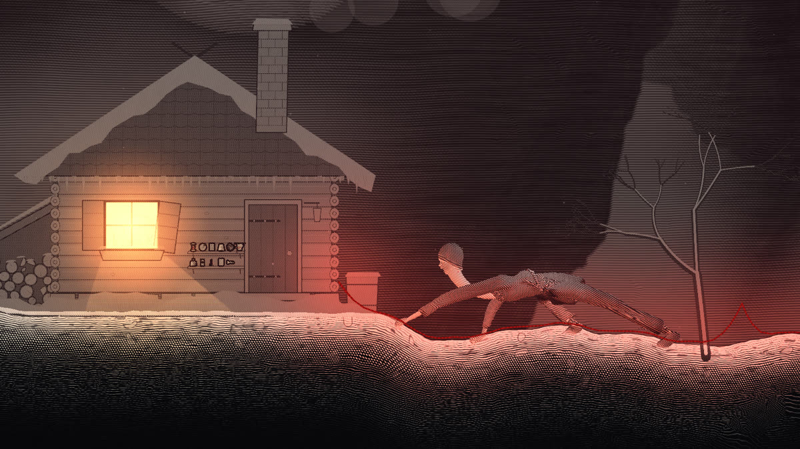
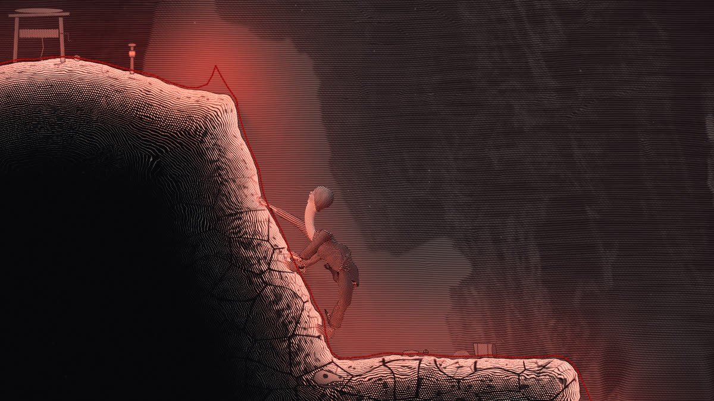
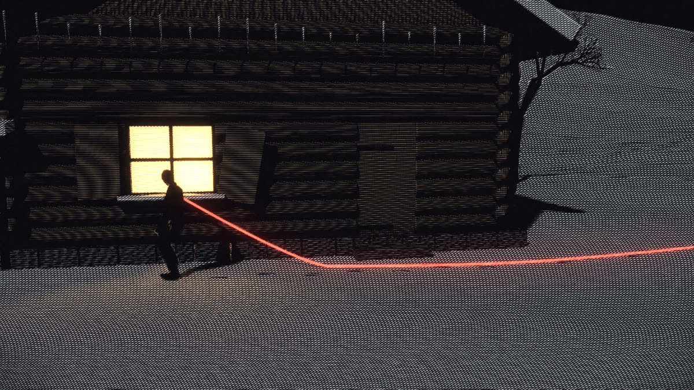

Every Name
a light from far upand something on the walls
The bitten ending now has a film after its titles instead of a black screen. The tied ending joins its film without a jump: the climb stops at the mouth of the cave, and the film begins there, hands first. Plucking is on ;.
After the titles
make a cutscene for the ending where i cut the thread after the titles. […] the doll sitting on the floor of the cave under some pale top-down light, monster crawling behind it over the walls and trying names. The camera should be slowly zooming out.
The whole film, 26 seconds, with sound. In the game each name is also subtitled.


BeforeAfterDrag the thread to compare
- One shot, one move. The camera goes back from the doll in a straight line at one speed, on one lens, until the whole cave is in view.
- It crawls. On hands and feet over the rock, up the wall and onto the roof. A hand or foot that is down stays down until it lifts, and moves on in diagonal pairs.
- It stops to ask. At every name it stands still, its head comes round to the doll, and the jaw moves with the recording. Then it waits, and goes on.
- One name makes the doll look up. It is the fifth, and it isn’t hers.
- The light. It falls down the well and lies on the floor round the doll, with the grey thread and the petals. At the end the thing reaches the mouth of the well, and the light goes.
- The sound. Palms and toes on rock are placed by the crawl itself, the names carry round the cave, water drips. Far above, the title’s tune runs at half its speed.
- A fault gone with the old screen: a piece of red thread was left floating on the black.
| Checked | Result |
|---|---|
| Camera speed, fastest against slowest frame | 0.001 mm |
| Sound in the film against the movement | 0.0 ms |
| Flicker (back-and-forth change per pixel, 0 to 255) | 9.2 |
| Hand or foot sliding while it is down | hands under 2 mm, feet 0 mm |
The first version pulled back faster and from closer, and flickered at 12.8
Out of the cave
the monster running out of cave animation should end when it reaches the exit of the cave. After that the cutscene should start with hands popping out of the cave


BeforeAfterDrag the thread to compare
- The last stretch is the way out. It comes over the first ledge and up the wall of the pit. As it gets to the top everything goes black and silent.
- The film begins on the other side of that same lip, with the hands. The shot of the cottage that used to open it comes second.
- That second shot is new. It had no one in it, so nothing said how the thing got from the pit to the house.
Open the tied ending’s film
The whole film in its new order, with sound


BeforeAfterDrag the thread to compare
It walks along the thread the way she used to come home, with its arms hanging and its eyes on the window. Seventeen steps, each foot planted, each step heard on the frame it lands. When it stops at the window, the light goes out.
The key
make thr default key for the pluck to be ;
Plucking is ; by default, and the prompts and the choice at the end show it. F, J and C still work. A key you have chosen yourself in the options stays as you set it.
Where it lives
app/assets/cine/names.mp4scripts/cine/shots_end.py (N1, Crawler)app/src/main.js (coda)app/src/ending.js (startClimb, climb)app/src/input.js